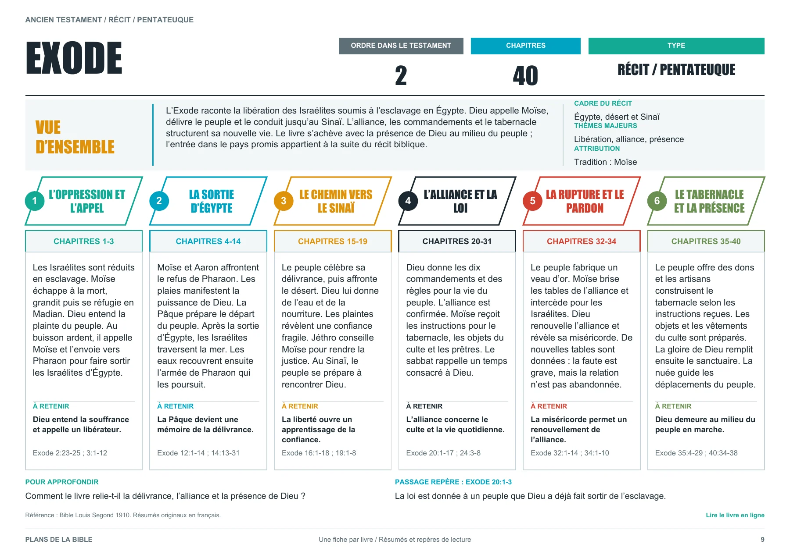

Une fiche complète : l’Exode
Voici un extrait réel du PDF en français. Pour lire le texte en détail, ouvrez la vue agrandie ci-dessous.

Lire la fiche en grand
Faites défiler la fiche horizontalement pour parcourir les colonnes.
Voici un extrait réel du PDF en français. Pour lire le texte en détail, ouvrez la vue agrandie ci-dessous.

Faites défiler la fiche horizontalement pour parcourir les colonnes.